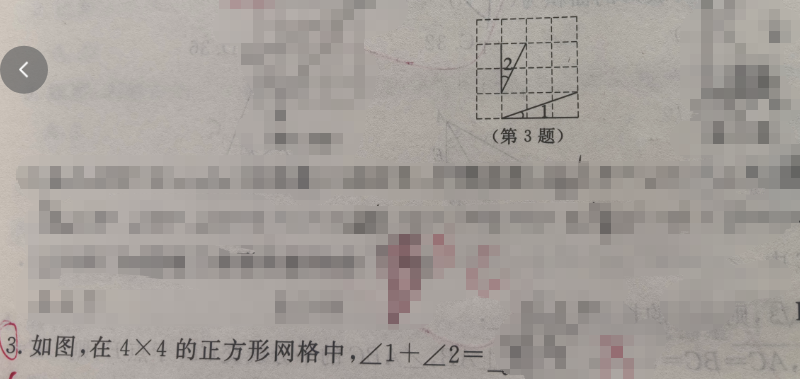
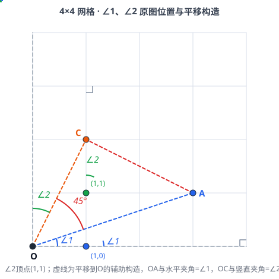

📷 点击查看原图
如图，在 的正方形网格中， ______。
| 知识点 | 说明 |
|---|---|
| 网格几何 | 格点三角形的边长可用勾股定理计算 |
| 勾股定理 | 直角三角形： |
| 勾股定理逆定理 | 若 ，则该三角形是直角三角形 |
| 等腰直角三角形 | 两腰相等的直角三角形，底角为 |
| 全等三角形 | 直角边对应相等的两个直角三角形全等（SAS） |
| 互余关系 | 直角三角形两锐角互余，和为 |
设每个小正方形边长为 。原题中 的顶点在格点 、 的顶点在格点 （见图中实色三角形与弧标）。为便于计算，把这两个角平移到左下角公共顶点 ，并取辅助格点：

🔍 点击查看原图
💡 图中：实色三角形为原题 、 所在位置（顶点分别为 、）；虚线为把它们平移到 后的辅助构造——（蓝）与水平方向夹角为 ，（橙）与竖直方向夹角为 ，（红）与 、 构成等腰直角三角形，。
连接 、、，并过 作竖直参考线 。
其中平移后 （ 与水平方向 的夹角），（ 与竖直方向 的夹角）。
把原题的 三角形平移到 ：顶点为 ，直角顶点为 ，另一顶点为 。平移不改变角度，因此 等于斜边 与竖直边 的夹角。
再观察直角三角形 ：水平直角边 长为 ，竖直直角边 长为 ，斜边也是 ，而 是斜边 与水平边 的夹角。
这两个直角三角形全等（直角边 和 对应相等，SAS），在同一个三角形中两锐角互余，于是：
即：
由勾股定理：
所以 （两腰相等）。
又因为 ，根据勾股定理逆定理， 是直角三角形，且 。
因此 是等腰直角三角形，于是：
从图中可以看出：
而 ，所以：
整理得：
题1（网格角度·江西中考常见）：在正方形网格中，某锐角 所在直角三角形的直角边为 和 ，某锐角 所在直角三角形的直角边为 和 ，且两角均为斜边与水平边所夹的锐角，则 ______。📄 查看详细解答 →
💡 答：。这类网格角度题常通过构造等腰直角三角形求解。
题2：在 网格中， 的顶点 在格点上，、 分别经过格点 、，求证：。📄 查看详细解答 →
💡 提示：，，， 是等腰直角三角形。